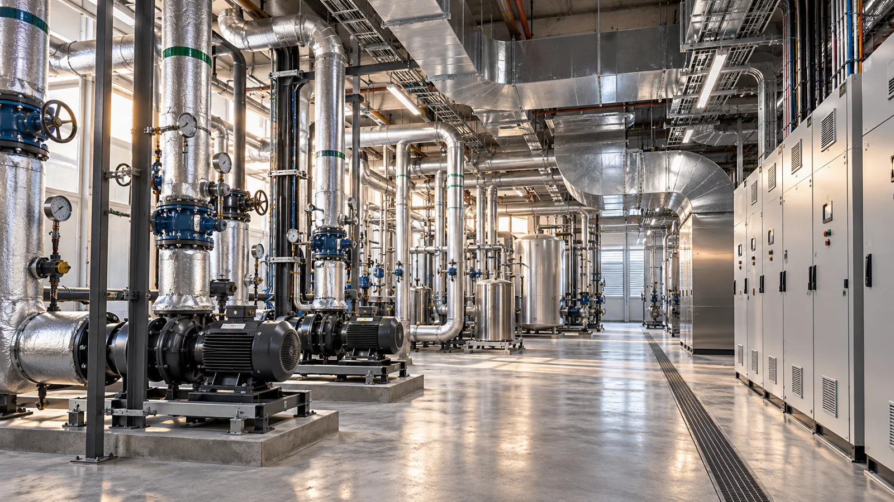

Calefacción y refrigeración
Montaje de redes y equipos previstos en la solución técnica, coordinados con otras especialidades.
EXPERIENCIA INTEGRADA
Calefacción, ventilación y aire acondicionado para espacios donde confort, funcionalidad y acceso de mantenimiento deben ir juntos.

Climatización en un espacio técnico
ÁREAS DE INTERVENCIÓN
Montaje de redes y equipos previstos en la solución técnica, coordinados con otras especialidades.
Conductos, distribución de aire y conexiones teniendo en cuenta el espacio y los accesos técnicos.
Coordinación de pruebas, ajustes y entrega con proveedores y especialistas implicados.
UN ALCANCE BIEN DEFINIDO
La climatización engloba calefacción, ventilación y aire acondicionado. Los sistemas se seleccionan según uso, ocupación, aportes de calor y condiciones de funcionamiento. VASTASIA prepara y ejecuta los trabajos definidos por la solución técnica, coordinados con electricidad y fontanería.
Consideramos conductos y tuberías, espacio para equipos, acceso de mantenimiento e interfaces con techos y acabados. Las pruebas, ajustes y puesta en marcha se organizan con proveedores y especialistas según las fases y responsabilidades acordadas.
Son útiles la ubicación, el tipo de edificio, la fase, los planos disponibles y el calendario previsto. Podemos empezar con lo conocido e identificar juntos qué hace falta aclarar.
Uso del edificio, documentación disponible, especialidades, calendario, acceso a obra y límites exactos de los trabajos.
El proyecto define la solución, las prestaciones y los equipos; la selección no se basa únicamente en la superficie del edificio.
CÓMO TRABAJAMOS
Hablar de objetivos, estado actual y documentación disponible.
Acordar el enfoque, las responsabilidades y la oferta por especialidad.
Organizar el equipo y la secuencia de trabajos según la obra.
Completar las comprobaciones acordadas y documentar la entrega.
PREGUNTAS FRECUENTES
No. Incluye calefacción, ventilación y aire acondicionado. La solución de un edificio puede combinar varios sistemas según sus necesidades.
La selección sigue el proyecto, las necesidades de los espacios y sus condiciones de uso. La superficie por sí sola no determina la solución.
Las responsabilidades se definen en contrato y con los proveedores. Coordinamos las fases de nuestro alcance con los especialistas implicados.
VASTASIA CONSULTING GROUP
Cuéntanos la ubicación, el tipo de edificio y la fase del proyecto. Definiremos juntos el siguiente paso.